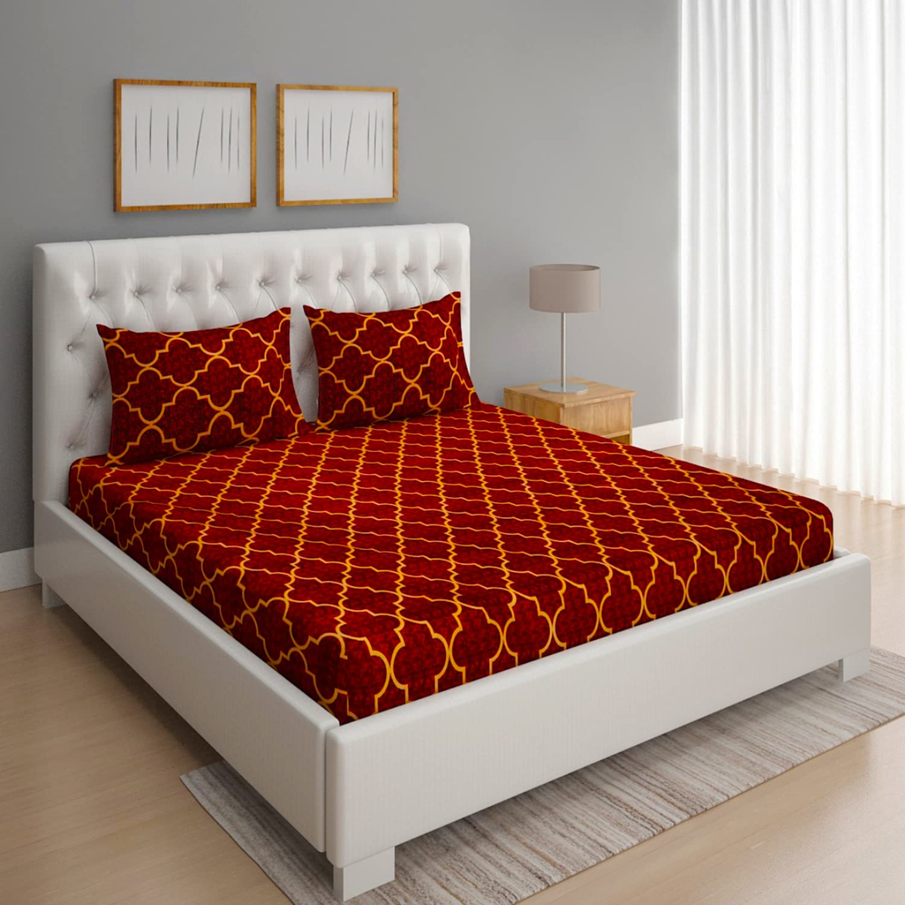
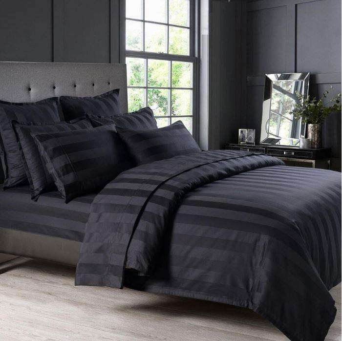




The Modern Geometric Print Bedsheet adds a bold, contemporary touch to any bedroom. Featuring dynamic shapes and vibrant patterns, it creates an eye-catching focal point in the room. Made from high-quality, durable fabric, it combines both style and comfort, ensuring a restful night’s sleep.Perfect for those who love to embrace modern design, this bedsheet blends well with minimalistic and eclectic decor styles alike. Whether you’re looking to refresh your space or make a statement, it’s the perfect choice for a chic, modern bedroom.
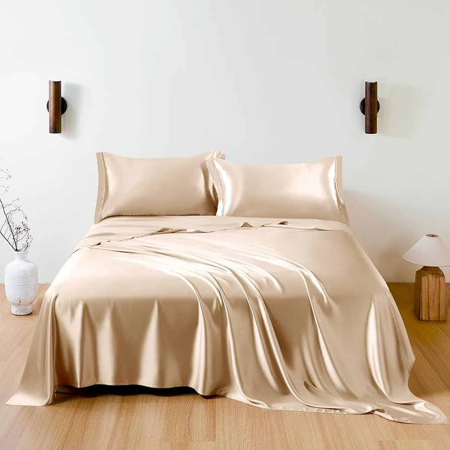
Indulge in the ultimate comfort with the Luxury Silk Bedsheet, designed to elevate your bedroom into a sanctuary of elegance. Made from premium silk, this bedsheet offers a smooth, lustrous texture that feels incredibly soft against the skin. Its rich sheen and sophisticated design add a touch of opulence to any room, making it perfect for creating a lavish atmosphere. The breathable fabric ensures comfort year-round, keeping you cool in the summer and warm in the winter. Ideal for those seeking luxury and refinement, it’s a perfect addition to any stylish bedroom.
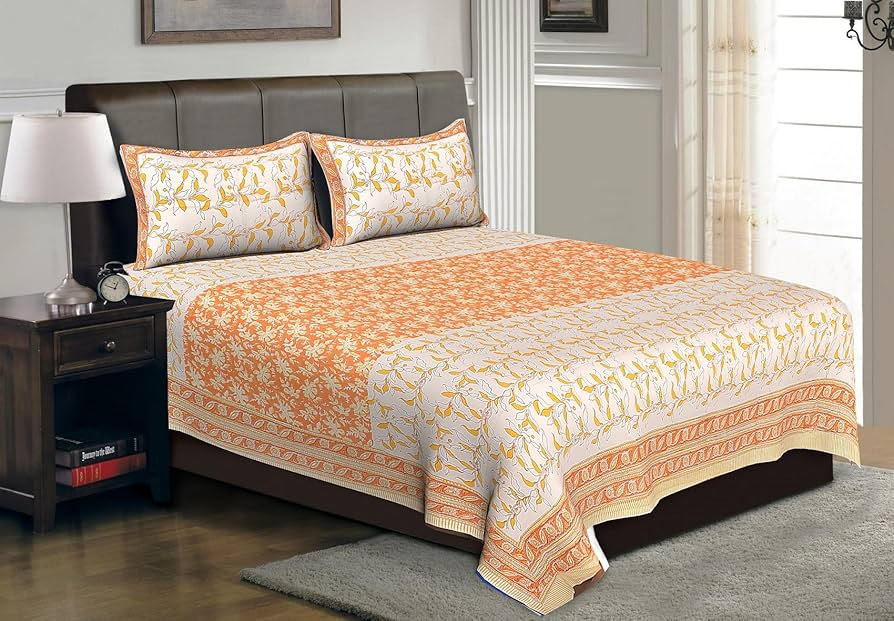
The Organic Cotton Bedsheet offers a natural, eco-friendly alternative without compromising on comfort. Made from 100% organic cotton, it is free from harmful chemicals, providing a healthier option for your skin and the environment. The soft, breathable fabric ensures a cool and comfortable sleep, making it perfect for all seasons. Its durable and high-quality material ensures long-lasting use, while the subtle, natural colors add a calming touch to your bedroom decor. Ideal for those who value sustainability and quality, this bedsheet offers both luxury and peace of mind.
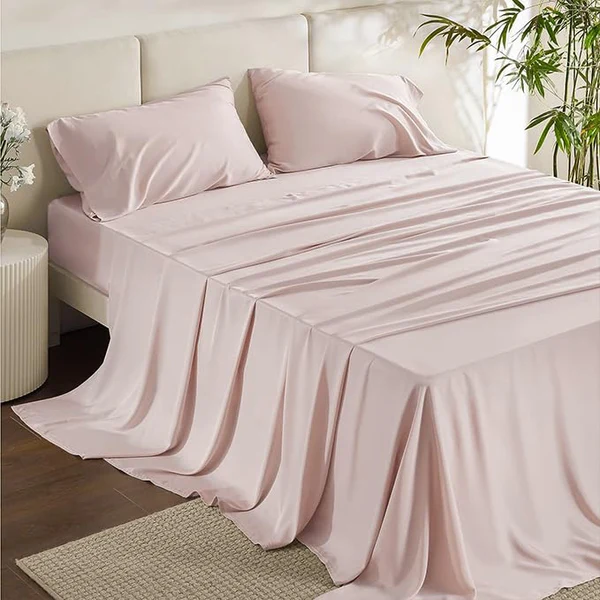
Bamboo Bedsheets are known for their eco-friendly properties and luxurious feel. Made from bamboo fibers, they are naturally soft, breathable, and hypoallergenic, making them an ideal choice for those with sensitive skin. The sheets are moisture-wicking, keeping you cool and comfortable throughout the night, and they are also resistant to odors and bacteria. Bamboo fabric is durable and has a silky smooth texture that provides a luxurious sleeping experience. Additionally, it’s an environmentally sustainable option for those looking to reduce their carbon footprint.
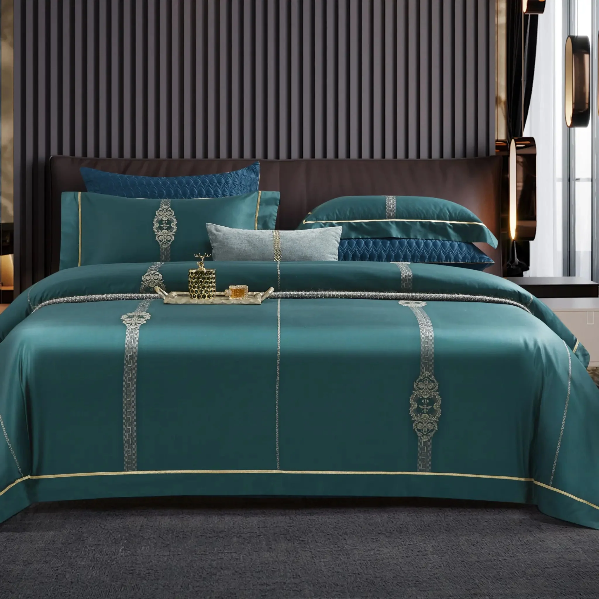
Egyptian Cotton Bedsheets are renowned for their exceptional quality and luxurious feel. Made from long-staple cotton fibers, they are incredibly soft, durable, and resistant to fraying. These sheets have a smooth, silky texture that becomes even softer with each wash. Egyptian cotton is breathable, helping to regulate body temperature, making it perfect for all seasons. The high thread count of Egyptian cotton ensures a superior, long-lasting product, offering both comfort and elegance for your bedroom.
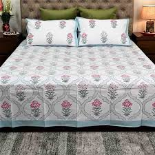
Percale cotton bedsheets are made from a tightly woven fabric, known for its crisp, cool feel. The high thread count results in a smooth, durable texture that offers a luxurious sleep experience. These sheets are breathable, making them ideal for warmer climates or for those who prefer a cooler sleep surface. Percale cotton is soft yet crisp, and with regular use, the fabric becomes even softer without losing its fresh, cool feel. Its simple, timeless design adds an elegant touch to any bedroom.
Select a bedsheet type to see the comparison details.
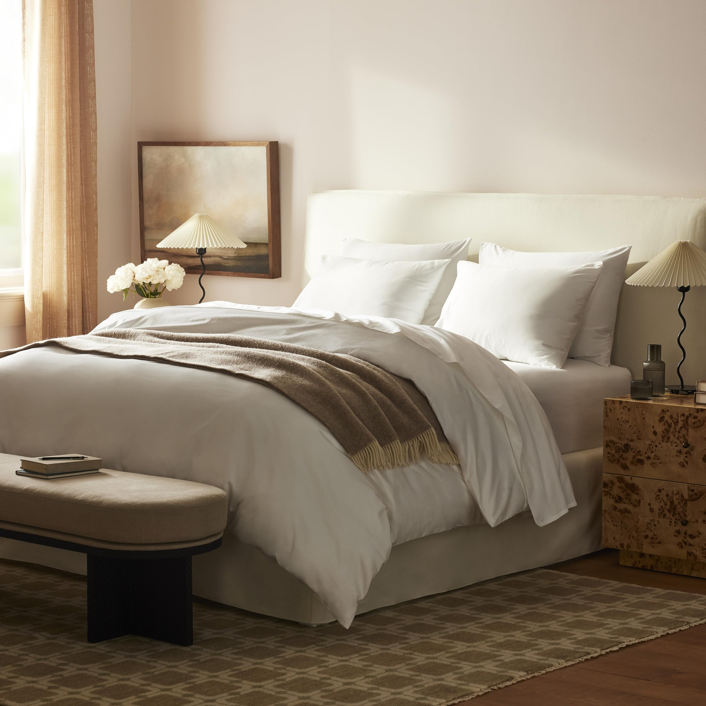
Brooklinen is renowned for offering luxury-quality bedding at a reasonable price. They have a wide variety of sheets, from their soft linen and percale cotton sheets to luxurious sateen options. Their sheets are highly praised for comfort, durability, and breathability.
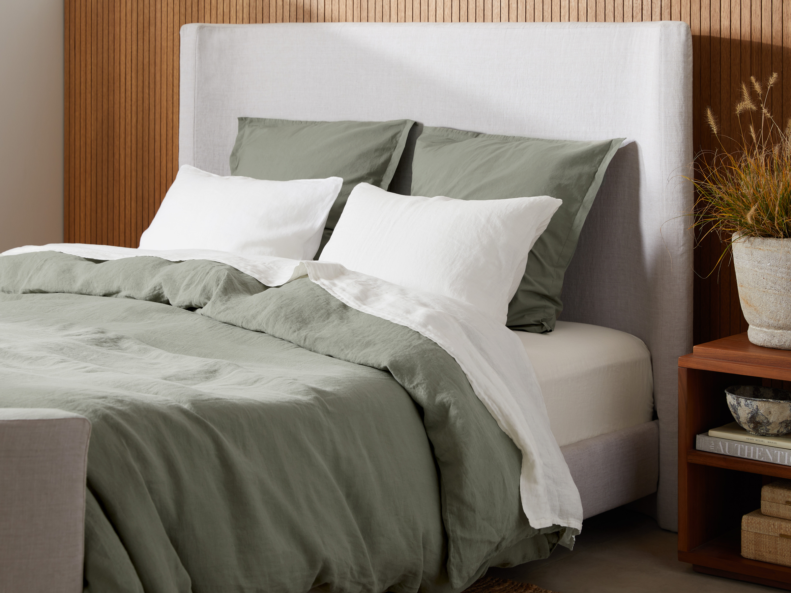
Parachute is known for its premium, well-crafted linens and bedding. They focus on high-quality materials like Egyptian cotton, linen, and sateen. Their products are loved for their durability, soft feel, and chic, minimalist design.
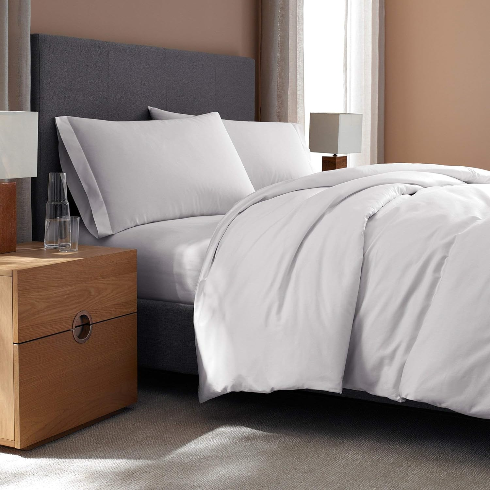
Frette is a luxury brand that offers ultra-high-end sheets, commonly seen in 5-star hotels around the world. Their products are made from the finest materials like Egyptian cotton and feature elegant, timeless designs. They are perfect for those seeking luxury, sophistication, and ultimate comfort.
Explore the most in-demand bedsheets with expert reviews and ratings.
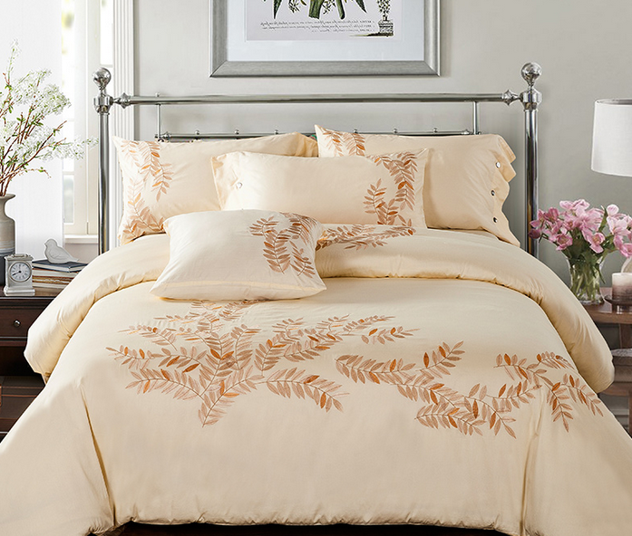
Made from 100% premium cotton, this soft and breathable bedsheet ensures a comfortable sleep. Available in various colors and patterns to match your style.
Review: "Super soft and feels amazing! The quality is top-notch."
Buy Now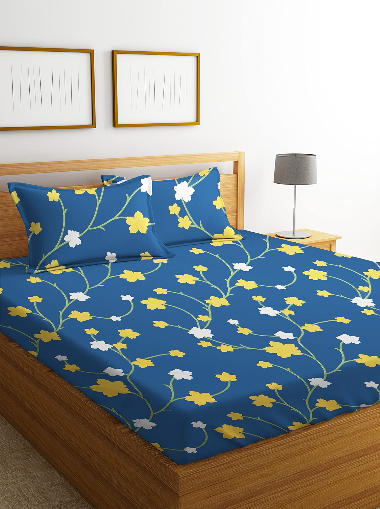
This stylish microfiber bedsheet is wrinkle-resistant and fade-proof, making it perfect for everyday use. Comes in vibrant prints to brighten up any bedroom.
Review: "Bright colors and very comfortable. It doesn’t wrinkle at all!"
Buy Now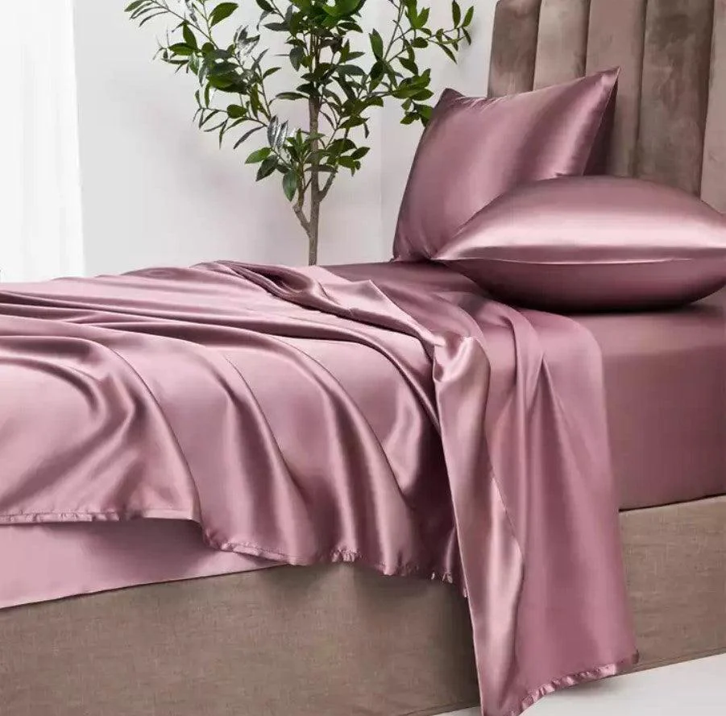
Indulge in luxury with this smooth silk satin bedsheet that provides an ultra-soft and elegant feel. Perfect for a premium bedroom experience.
Review: "Feels luxurious and silky smooth. Highly recommend!"
Buy NowIt’s recommended to wash your bedsheets at least once a week to maintain hygiene and remove sweat, dust, and allergens.
Cotton is the most popular choice due to its softness and breathability. Other great options include linen, bamboo, and microfiber, depending on your preference for comfort and durability.
Wash your bedsheets in cold water with mild detergent, avoid excessive sunlight exposure, and opt for a gentle cycle to preserve colors.
A thread count between 300-600 is ideal for softness and durability. Higher thread counts are not always better and may reduce breathability.
Remove sheets from the dryer while slightly damp, smooth them out, or use wrinkle-resistant fabric like microfiber or cotton blends.